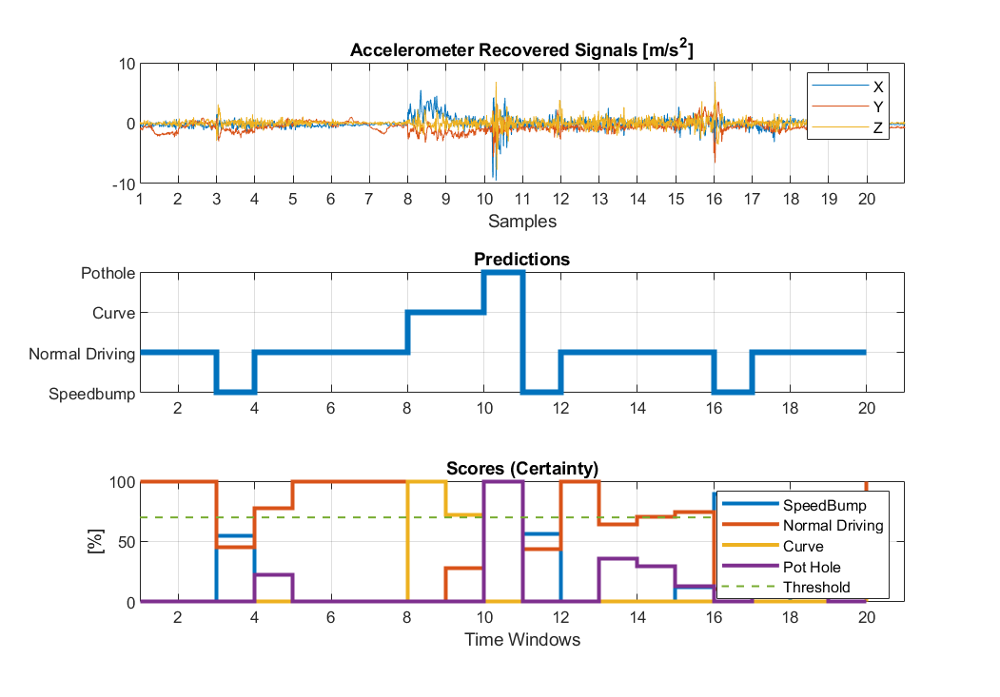
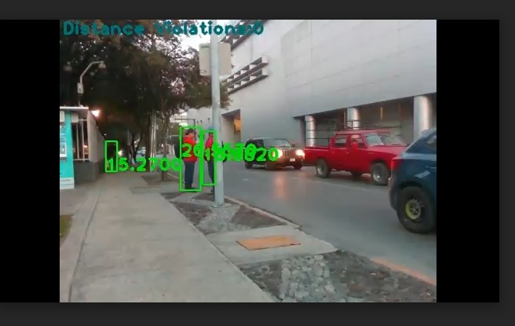

DESARROLLO DE PROTOTIPO DE SOFTWARE
Digital Twins for Urban Spaces: Digital Corner Case Study

The objective is to collect and process real information to create a multi-layered digitalized version of an urban space to enable the digital twin-based smart city concept. This digitalization will provide a clear and profound insight to the community and its interaction with the physical space to enable data-driven decision-making to make better and more sustainable communities.



Contacto
botin@tec.mx